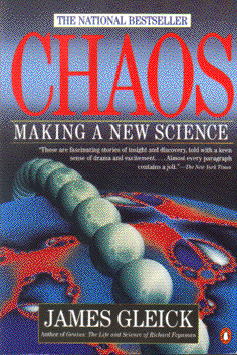

ChaosMaking a new Scienceby James Gleickpublisher: Penguin Publishing Non-fiction, 317 pages |  (book cover art, Copyright ©1987 James Gleick) Used with Permission. |
How do some calculations depend very sensitively on the initial conditions of a problem? One common example of this is the butterfly effect: the flap of a butterfly's wings over India may result in a hurricane in the Gulf of Mexico. Related to this is the idea of self-symmetry: if you look at a small portion of a large object, it may resemble or duplicate the large object. A look of the elegance and simplicity that arise when things get too complicated for today's math and science.Recommended for: Math enthusiasts, computer scientists, and people that think that science and math are too idealized and aren't "messy" enough.Note: for your graphical presentation, you may choose to write a computer program to calculate and draw one or more of the chaotic structures in this book. See Mr. Howe for details.
Deadline: Peer Review Session on February 8, 2005; paper due February 10, 2005.
You should write a 3 - 4 page essay on one of the following questions. Your essay should include examples and references to the book, unless otherwise specified. Page number references are sufficient for citing material from the primary book. If you use outside materials, cite your sources in full. If you would rather write on a different topic, you may, but clear it with Mr. Howe or Ms. Sullivan first.
You will give a 10 minute presentation on both of the following:
Along with this presentation, you should have a graphic that will go with it. A Power Point presentation is recommended, but if you have a special idea for a something else, such as a model, an original video presentation, or a well done drawing/ painting/ sculpture/ etc., you may do so, provided it involves a similar level of effort and polish. Speak to Mr. Howe or Ms. Sullivan first if you are considering an alternate graphic format to the Power Point.